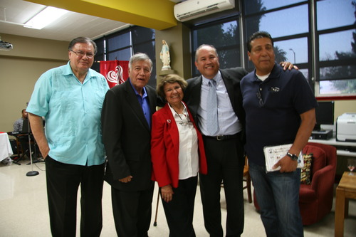
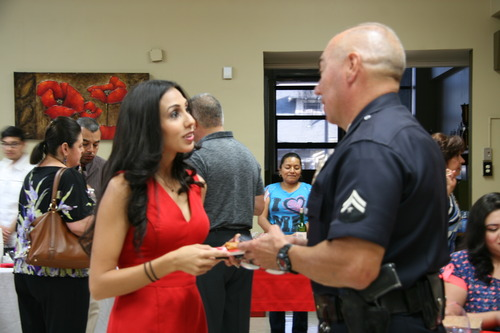
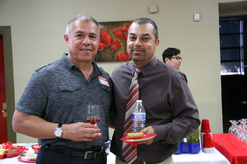
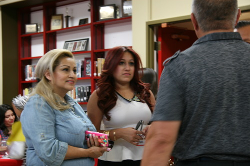

BUSINESS MIXER AT SACRED HEART

On June 5, representatives of over 75 businesses attended, networked, and enjoyed food and drinks at the business mixer at Sacred Heart, promoting the theme “Partnering Business in Education.”
Maria Denis, Community Outreach of Sacred Heart High School (SHHS), John Menchaca, President of Lincoln Heights Chamber, and Raymond Saborio, Principal of SHHS made brief introductions.


Soft music was provided by the band led by Sacred Heart’s Athletic Director and Biology teacher, Greg Nakashima. Friends chatted, people interacted with new acquaintances, and numerous prizes, including cell phones, tools and restaurant certificates were raffled.